Cycle ID: C0
Reporting Profile: RP_C0_HISTORICAL_FIXED_CLUSTER
Reporting ID: REP_C0_20260619T174611Z
Generated at UTC: 2026-06-19T17:46:12Z
This report provides a consolidated view of the historical fixed-cluster LocalAI worker-mode characterization evidence. It preserves the original benchmark families as reference evidence while the provider-backed pipeline evolves independently.
The report combines measurement CSV data, cluster-capture evidence, scenario configuration metadata and technical diagnosis context when those artifacts are available.
The values below describe the global baseline configuration used as a cross-cycle reference. Scenario-specific and sweep-local sections report the effective infrastructure, placement, worker count and runtime configuration used by each scenario. Percentage deltas are computed against the family-local reference scenario when one is defined for the sweep.
| Dimension | Reference value |
|---|---|
| Baseline ID | B0 |
| Model | llama-3.2-1b-instruct:q4_k_m |
| Worker count | 2 |
| Placement | colocated_sc_app_02 |
| Workload | users=2, spawnRate=1, runTime=2m |
| Prompt | Reply with only READY. |
| Request timeout | 120 s |
| Infrastructure profile | INFRA_ORIGINAL_1CP_2W_8C16G |
| Placement profile | PL_COLOCATED |
The scenarios below are the sweep-local references used to interpret percentage deltas within each family. They may differ from the cross-cycle baseline when a campaign intentionally varies infrastructure, placement, latency or tenancy.
| Sweep | Reference scenario | Description | Status | Varied dimension |
|---|---|---|---|---|
| Worker-Count | W2 | W2 (2 worker) | measured | number of LocalAI RPC workers |
| Workload | WL2 | WL2 (2 users, spawn 1) | measured | synthetic client-side workload pattern |
| Model | M1 | M1 (llama-3.2-1b-instruct:q4_k_m) | measured | model served by the LocalAI worker-mode cluster |
| Placement | PL1 | PL1 (colocated_sc_app_02) | measured | Kubernetes placement strategy for LocalAI server and workers |
| Layer | Primary use | Source |
|---|---|---|
| Measurement CSV | Quantitative charts and scenario summary metrics | {"worker-count": "results/experimental-cycles/C0/benchmark/pilot-consolidated/worker-count", "workload": "results/experimental-cycles/C0/benchmark/pilot-consolidated/workload", "models": "results/experimental-cycles/C0/benchmark/pilot-consolidated/models", "placement": "results/experimental-cycles/C0/benchmark/pilot-consolidated/placement"} |
| Technical diagnosis | Interpretation, family judgments, findings, unsupported-scenario context | results/experimental-cycles/C0/diagnosis/analysis_diagnosis_all_NA_20260619T174612Z_diagnosis.json |
| Scenario configuration | Fixed/varied dimensions and scenario labels | config/scenarios/** |
| Cluster-side artifacts | CPU/memory snapshots, pod placement and event evidence | cluster capture artifacts |
| Reporting output | Current generated report package | results/experimental-cycles/C0/reporting |
This cycle preserves fixed-cluster benchmark evidence. Provider-specific sections are intentionally omitted because the cycle is not materialized through a provider-backed infrastructure profile.
| Field | Value |
|---|---|
| Cycle ID | C0 |
| Baseline ID | B0 |
| Reporting profile | RP_C0_HISTORICAL_FIXED_CLUSTER |
| Cycle role | historical fixed-cluster evidence |
| Benchmark families | Worker-Count, Workload, Model, Placement |
| Configured scenarios | 13 |
| Measured scenarios | 11 |
| Unsupported scenarios | 2 |
| Missing scenarios | 0 |
| Diagnosis profile | TD_C0_HISTORICAL_FIXED_CLUSTER |
| Diagnosis root | results/experimental-cycles/C0/diagnosis |
| Reporting output | results/experimental-cycles/C0/reporting |
| Request target | POST /v1/chat/completions |
The report keeps the historical benchmark families readable and comparable while avoiding provider-oriented fields that do not apply to this cycle.
The global report below provides the stakeholder-facing overview. Each sweep also has a dedicated report for focused inspection of one varied dimension.
| Sweep | Dedicated HTML report | Execution status | Coverage | Varied dimension |
|---|---|---|---|---|
| Worker-Count | worker-count | partially_measured | measured=2, unsupported=2, missing=0 | number of LocalAI RPC workers |
| Workload | workload | fully_measured | measured=3, unsupported=0, missing=0 | synthetic client-side workload pattern |
| Model | models | fully_measured | measured=4, unsupported=0, missing=0 | model served by the LocalAI worker-mode cluster |
| Placement | placement | fully_measured | measured=2, unsupported=0, missing=0 | Kubernetes placement strategy for LocalAI server and workers |
| Family | Scenarios | Observed | Measured | Unsupported | Samples |
|---|---|---|---|---|---|
| worker-count | 4 | 4 | 2 | 2 | 6 |
| workload | 3 | 3 | 3 | 0 | 9 |
| models | 4 | 4 | 4 | 0 | 12 |
| placement | 2 | 2 | 2 | 0 | 6 |
Execution status: partially_measured
Execution note: At least one configured scenario has measured benchmark samples, while other scenarios are missing or unsupported.
Varied dimension: number of LocalAI RPC workers
Fixed dimensions: baseline model, baseline workload, baseline placement, baseline protocol.
Reference scenario within the sweep: W2
| Scenario count | Measured | Unsupported | Missing |
|---|---|---|---|
| 4 | 2 | 2 | 0 |
This table is derived from resolved scenario metadata. A parameter is marked as controlled only when it has the same effective value across all scenarios in the sweep.
| Parameter | Resolved value | Interpretation |
|---|---|---|
| Model | llama-3.2-1b-instruct:q4_k_m | controlled |
| Worker count | varies across scenarios (4 values) | varied or scenario-specific |
| Placement | colocated_sc_app_02 | controlled |
| Workload | users=2, spawnRate=1, runTime=2m | controlled |
| Topology | varies across scenarios (4 values) | varied or scenario-specific |
| Server manifest | infra/k8s/compositions/server/models/m1 | controlled |
| Prompt | Reply with only READY. | controlled |
| Temperature | 0.1 | controlled |
| Request timeout (s) | 120 | controlled |
| Scenario | Status | Varied value (number of LocalAI RPC workers) | Model | Worker count | Placement | Workload | Timeout (s) |
|---|---|---|---|---|---|---|---|
W1 | measured | 1 | llama-3.2-1b-instruct:q4_k_m | 1 | colocated_sc_app_02 | users=2, spawnRate=1, runTime=2m | 120 |
W2 | measured | 2 | llama-3.2-1b-instruct:q4_k_m | 2 | colocated_sc_app_02 | users=2, spawnRate=1, runTime=2m | 120 |
W3 | unsupported_under_current_constraints | 3 | llama-3.2-1b-instruct:q4_k_m | 3 | colocated_sc_app_02 | users=2, spawnRate=1, runTime=2m | 120 |
W4 | unsupported_under_current_constraints | 4 | llama-3.2-1b-instruct:q4_k_m | 4 | colocated_sc_app_02 | users=2, spawnRate=1, runTime=2m | 120 |
This compact table reports the core indicators used to read the sweep at a glance. Detailed percentiles, deltas and resource snapshots are reported in the following extended table.
| Scenario | Description | Status | Sample count | Mean response time (ms) | P95 response time (ms) | Throughput (requests/s) | Unsupported evidence |
|---|---|---|---|---|---|---|---|
W1 | W1 (1 worker) | measured | 3 | 1708.96 | 1800.00 | 0.5397 | |
W2 | W2 (2 worker) | measured | 3 | 1704.00 | 1800.00 | 0.5406 | |
W3 | W3 (3 worker) | unsupported_under_current_constraints | 0 | n/a | n/a | n/a | failed_scheduling, insufficient_cpu, insufficient_memory, latency_injection, no_preemption_victims_found, node_affinity_selector_mismatch, pending_pod, preemption_not_helpful |
W4 | W4 (4 worker) | unsupported_under_current_constraints | 0 | n/a | n/a | n/a | failed_scheduling, insufficient_cpu, insufficient_memory, latency_injection, no_preemption_victims_found, node_affinity_selector_mismatch, pending_pod, preemption_not_helpful |
This secondary table keeps the additional metrics aligned with the technical diagnosis while avoiding an excessively wide primary summary table.
| Scenario | P50 response time (ms) | P99 response time (ms) | Mean response time delta (%) | P95 response time delta (%) | Throughput delta (%) | Max node CPU snapshot (%) | Max node memory snapshot (%) | Max pod CPU snapshot (mCPU) | Max pod memory snapshot (MiB) |
|---|---|---|---|---|---|---|---|---|---|
W1 | 1700.00 | 2133.33 | 0.29 | 0.00 | -0.17 | 35.00 | 38.67 | 2708.00 | 1053.00 |
W2 | 1700.00 | 2100.00 | 0.00 | 0.00 | 0.00 | 37.00 | 37.33 | 2720.67 | 1053.00 |
W3 | n/a | n/a | n/a | n/a | n/a | n/a | n/a | n/a | n/a |
W4 | n/a | n/a | n/a | n/a | n/a | n/a | n/a | n/a | n/a |
weak_signal, confidence: low).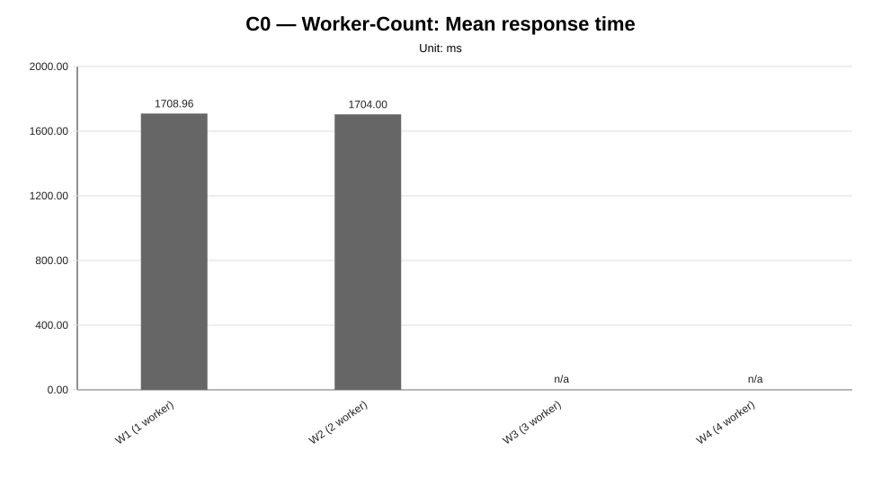
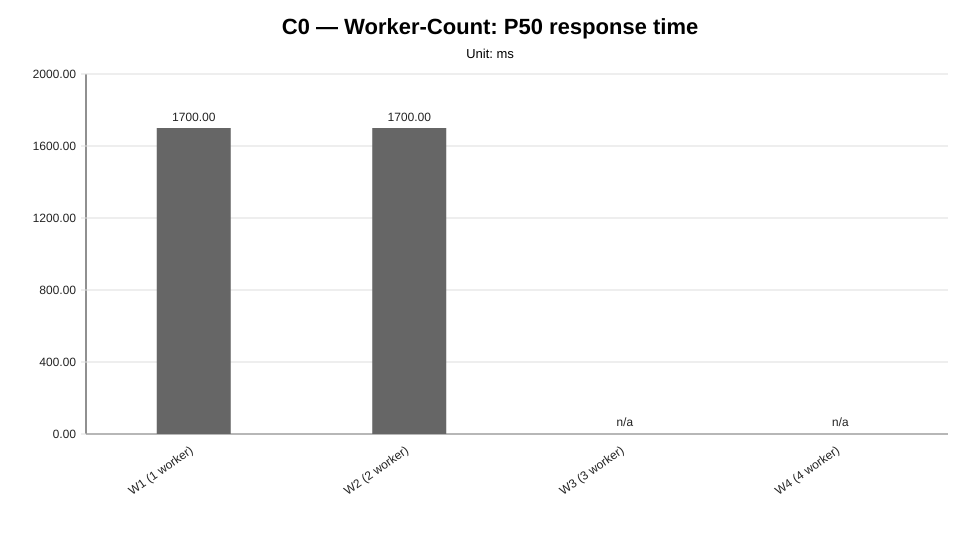
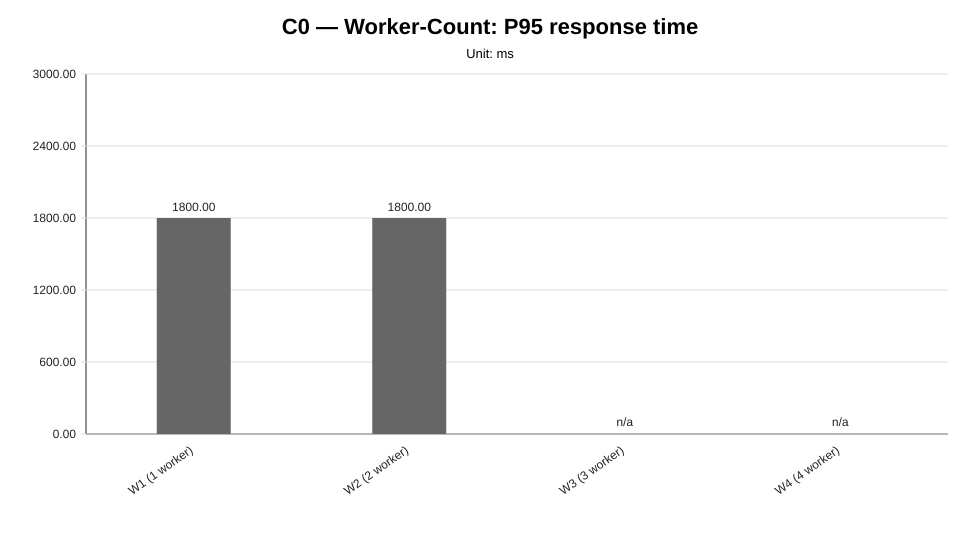
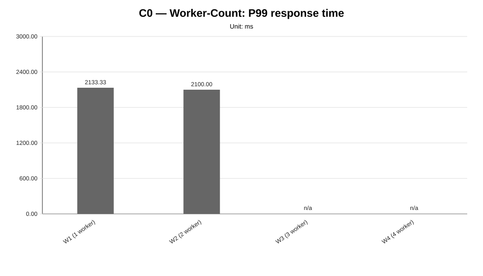
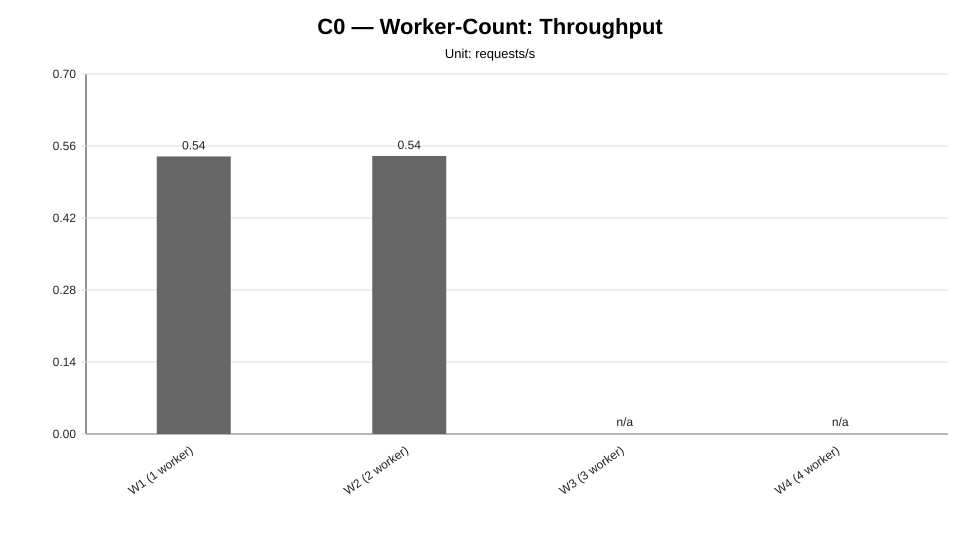
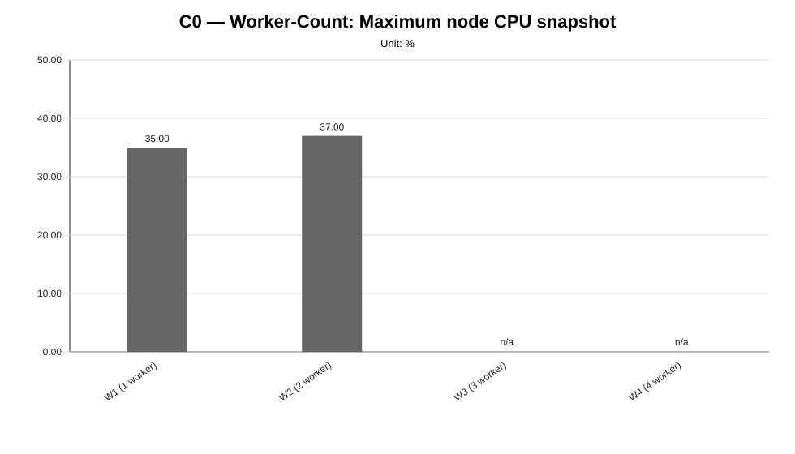
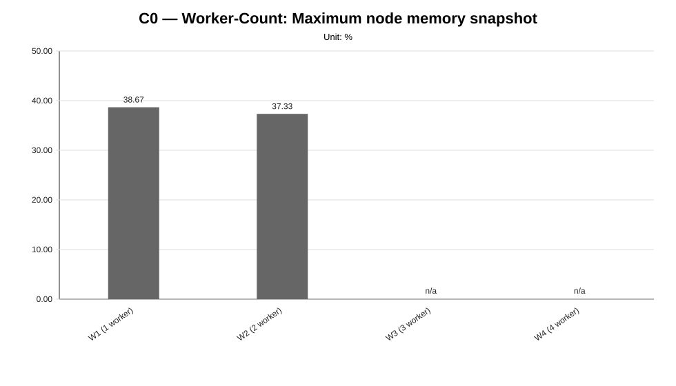
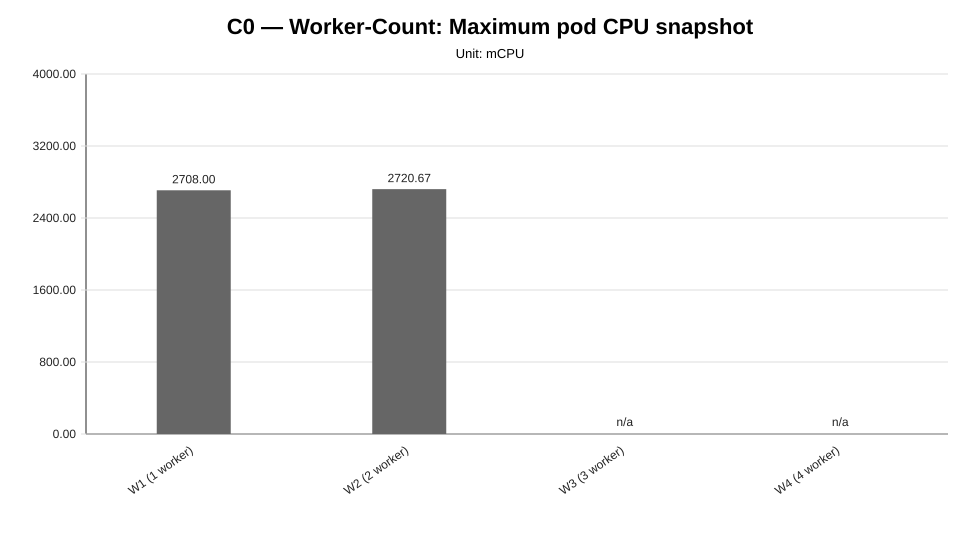
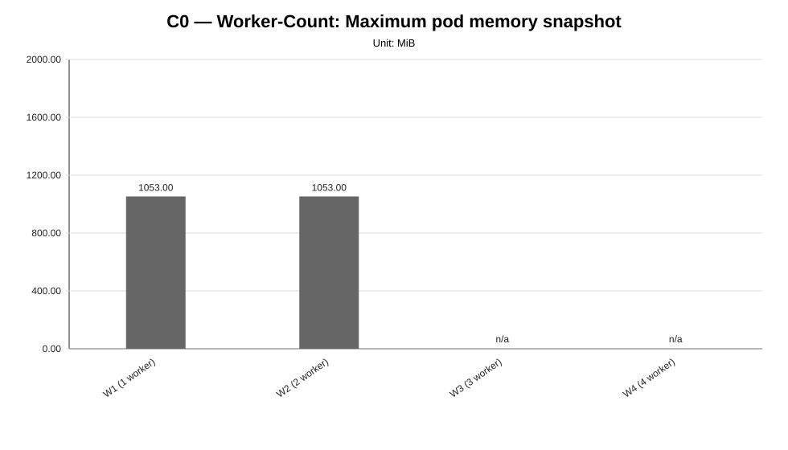
not_executed sweep means that neither measurement CSV files nor unsupported-scenario evidence were found for any configured scenario in that family.Execution status: fully_measured
Execution note: All configured scenarios in this sweep have measured benchmark samples.
Varied dimension: synthetic client-side workload pattern
Fixed dimensions: baseline model, baseline worker count, baseline placement, baseline protocol.
Reference scenario within the sweep: WL2
| Scenario count | Measured | Unsupported | Missing |
|---|---|---|---|
| 3 | 3 | 0 | 0 |
This table is derived from resolved scenario metadata. A parameter is marked as controlled only when it has the same effective value across all scenarios in the sweep.
| Parameter | Resolved value | Interpretation |
|---|---|---|
| Model | llama-3.2-1b-instruct:q4_k_m | controlled |
| Worker count | 2 | controlled |
| Placement | colocated_sc_app_02 | controlled |
| Workload | varies across scenarios (3 values) | varied or scenario-specific |
| Topology | infra/k8s/compositions/topology/colocated-sc-app-02-w2 | controlled |
| Server manifest | infra/k8s/compositions/server/models/m1 | controlled |
| Prompt | Reply with only READY. | controlled |
| Temperature | 0.1 | controlled |
| Request timeout (s) | 120 | controlled |
| Scenario | Status | Varied value (synthetic client-side workload pattern) | Model | Worker count | Placement | Workload | Timeout (s) |
|---|---|---|---|---|---|---|---|
WL1 | measured | users=1, spawnRate=1, runTime=2m | llama-3.2-1b-instruct:q4_k_m | 2 | colocated_sc_app_02 | users=1, spawnRate=1, runTime=2m | 120 |
WL2 | measured | users=2, spawnRate=1, runTime=2m | llama-3.2-1b-instruct:q4_k_m | 2 | colocated_sc_app_02 | users=2, spawnRate=1, runTime=2m | 120 |
WL3 | measured | users=4, spawnRate=2, runTime=2m | llama-3.2-1b-instruct:q4_k_m | 2 | colocated_sc_app_02 | users=4, spawnRate=2, runTime=2m | 120 |
This compact table reports the core indicators used to read the sweep at a glance. Detailed percentiles, deltas and resource snapshots are reported in the following extended table.
| Scenario | Description | Status | Sample count | Mean response time (ms) | P95 response time (ms) | Throughput (requests/s) | Unsupported evidence |
|---|---|---|---|---|---|---|---|
WL1 | WL1 (1 users, spawn 1) | measured | 3 | 1589.17 | 1666.67 | 0.2812 | |
WL2 | WL2 (2 users, spawn 1) | measured | 3 | 1701.29 | 1800.00 | 0.5408 | |
WL3 | WL3 (4 users, spawn 2) | measured | 3 | 3311.63 | 3500.00 | 0.7499 |
This secondary table keeps the additional metrics aligned with the technical diagnosis while avoiding an excessively wide primary summary table.
| Scenario | P50 response time (ms) | P99 response time (ms) | Mean response time delta (%) | P95 response time delta (%) | Throughput delta (%) | Max node CPU snapshot (%) | Max node memory snapshot (%) | Max pod CPU snapshot (mCPU) | Max pod memory snapshot (MiB) |
|---|---|---|---|---|---|---|---|---|---|
WL1 | 1600.00 | 1766.67 | -6.59 | -7.41 | -48.00 | 17.33 | 37.00 | 1323.67 | 1053.00 |
WL2 | 1700.00 | 2000.00 | 0.00 | 0.00 | 0.00 | 36.67 | 37.33 | 2636.33 | 1053.00 |
WL3 | 3300.00 | 4200.00 | 94.65 | 94.44 | 38.66 | 54.67 | 38.67 | 3985.00 | 1053.00 |
strong_signal, confidence: medium).medium).


not_executed sweep means that neither measurement CSV files nor unsupported-scenario evidence were found for any configured scenario in that family.Execution status: fully_measured
Execution note: All configured scenarios in this sweep have measured benchmark samples.
Varied dimension: model served by the LocalAI worker-mode cluster
Fixed dimensions: baseline worker count, baseline workload, baseline placement, baseline protocol.
Reference scenario within the sweep: M1
| Scenario count | Measured | Unsupported | Missing |
|---|---|---|---|
| 4 | 4 | 0 | 0 |
This table is derived from resolved scenario metadata. A parameter is marked as controlled only when it has the same effective value across all scenarios in the sweep.
| Parameter | Resolved value | Interpretation |
|---|---|---|
| Model | varies across scenarios (4 values) | varied or scenario-specific |
| Worker count | 2 | controlled |
| Placement | colocated_sc_app_02 | controlled |
| Workload | users=2, spawnRate=1, runTime=2m | controlled |
| Topology | infra/k8s/compositions/topology/colocated-sc-app-02-w2 | controlled |
| Server manifest | varies across scenarios (4 values) | varied or scenario-specific |
| Prompt | Reply with only READY. | controlled |
| Temperature | 0.1 | controlled |
| Request timeout (s) | 120 | controlled |
| Scenario | Status | Varied value (model served by the LocalAI worker-mode cluster) | Model | Worker count | Placement | Workload | Timeout (s) |
|---|---|---|---|---|---|---|---|
M1 | measured | llama-3.2-1b-instruct:q4_k_m | llama-3.2-1b-instruct:q4_k_m | 2 | colocated_sc_app_02 | users=2, spawnRate=1, runTime=2m | 120 |
M2 | measured | llama-3.2-1b-instruct:q8_0 | llama-3.2-1b-instruct:q8_0 | 2 | colocated_sc_app_02 | users=2, spawnRate=1, runTime=2m | 120 |
M3 | measured | llama-3.2-3b-instruct:q4_k_m | llama-3.2-3b-instruct:q4_k_m | 2 | colocated_sc_app_02 | users=2, spawnRate=1, runTime=2m | 120 |
M4 | measured | llama-3.2-3b-instruct:q8_0 | llama-3.2-3b-instruct:q8_0 | 2 | colocated_sc_app_02 | users=2, spawnRate=1, runTime=2m | 120 |
This compact table reports the core indicators used to read the sweep at a glance. Detailed percentiles, deltas and resource snapshots are reported in the following extended table.
| Scenario | Description | Status | Sample count | Mean response time (ms) | P95 response time (ms) | Throughput (requests/s) | Unsupported evidence |
|---|---|---|---|---|---|---|---|
M1 | M1 (llama-3.2-1b-instruct:q4_k_m) | measured | 3 | 1705.28 | 1766.67 | 0.5405 | |
M2 | M2 (llama-3.2-1b-instruct:q8_0) | measured | 3 | 1570.39 | 1633.33 | 0.5610 | |
M3 | M3 (llama-3.2-3b-instruct:q4_k_m) | measured | 3 | 5626.16 | 5766.67 | 0.2614 | |
M4 | M4 (llama-3.2-3b-instruct:q8_0) | measured | 3 | 4872.38 | 5000.00 | 0.2903 |
This secondary table keeps the additional metrics aligned with the technical diagnosis while avoiding an excessively wide primary summary table.
| Scenario | P50 response time (ms) | P99 response time (ms) | Mean response time delta (%) | P95 response time delta (%) | Throughput delta (%) | Max node CPU snapshot (%) | Max node memory snapshot (%) | Max pod CPU snapshot (mCPU) | Max pod memory snapshot (MiB) |
|---|---|---|---|---|---|---|---|---|---|
M1 | 1700.00 | 2100.00 | 0.00 | 0.00 | 0.00 | 35.33 | 37.67 | 2749.00 | 1053.00 |
M2 | 1600.00 | 1800.00 | -7.91 | -7.55 | 3.79 | 34.67 | 37.33 | 1447.67 | 847.00 |
M3 | 5500.00 | 8600.00 | 229.93 | 226.42 | -51.64 | 52.00 | 37.33 | 2100.67 | 1524.00 |
M4 | 4733.33 | 8333.33 | 185.72 | 183.02 | -46.29 | 52.00 | 37.33 | 2070.67 | 2192.00 |
strong_signal, confidence: high).high).


not_executed sweep means that neither measurement CSV files nor unsupported-scenario evidence were found for any configured scenario in that family.Execution status: fully_measured
Execution note: All configured scenarios in this sweep have measured benchmark samples.
Varied dimension: Kubernetes placement strategy for LocalAI server and workers
Fixed dimensions: baseline model, baseline worker count, baseline workload, baseline protocol.
Reference scenario within the sweep: PL1
| Scenario count | Measured | Unsupported | Missing |
|---|---|---|---|
| 2 | 2 | 0 | 0 |
This table is derived from resolved scenario metadata. A parameter is marked as controlled only when it has the same effective value across all scenarios in the sweep.
| Parameter | Resolved value | Interpretation |
|---|---|---|
| Model | llama-3.2-1b-instruct:q4_k_m | controlled |
| Worker count | 2 | controlled |
| Placement | varies across scenarios (2 values) | varied or scenario-specific |
| Workload | users=2, spawnRate=1, runTime=2m | controlled |
| Topology | varies across scenarios (2 values) | varied or scenario-specific |
| Server manifest | infra/k8s/compositions/server/models/m1 | controlled |
| Prompt | Reply with only READY. | controlled |
| Temperature | 0.1 | controlled |
| Request timeout (s) | 120 | controlled |
| Scenario | Status | Varied value (Kubernetes placement strategy for LocalAI server and workers) | Model | Worker count | Placement | Workload | Timeout (s) |
|---|---|---|---|---|---|---|---|
PL1 | measured | colocated_sc_app_02 | llama-3.2-1b-instruct:q4_k_m | 2 | colocated_sc_app_02 | users=2, spawnRate=1, runTime=2m | 120 |
PL2 | measured | distributed | llama-3.2-1b-instruct:q4_k_m | 2 | distributed | users=2, spawnRate=1, runTime=2m | 120 |
This compact table reports the core indicators used to read the sweep at a glance. Detailed percentiles, deltas and resource snapshots are reported in the following extended table.
| Scenario | Description | Status | Sample count | Mean response time (ms) | P95 response time (ms) | Throughput (requests/s) | Unsupported evidence |
|---|---|---|---|---|---|---|---|
PL1 | PL1 (colocated_sc_app_02) | measured | 3 | 1718.21 | 1800.00 | 0.5386 | |
PL2 | PL2 (distributed) | measured | 3 | 1718.58 | 1800.00 | 0.5384 |
This secondary table keeps the additional metrics aligned with the technical diagnosis while avoiding an excessively wide primary summary table.
| Scenario | P50 response time (ms) | P99 response time (ms) | Mean response time delta (%) | P95 response time delta (%) | Throughput delta (%) | Max node CPU snapshot (%) | Max node memory snapshot (%) | Max pod CPU snapshot (mCPU) | Max pod memory snapshot (MiB) |
|---|---|---|---|---|---|---|---|---|---|
PL1 | 1700.00 | 2100.00 | 0.00 | 0.00 | 0.00 | 36.67 | 39.00 | 1577.00 | 606.00 |
PL2 | 1700.00 | 2133.33 | 0.02 | 0.00 | -0.04 | 21.33 | 38.67 | 1577.33 | 606.00 |
weak_signal, confidence: low).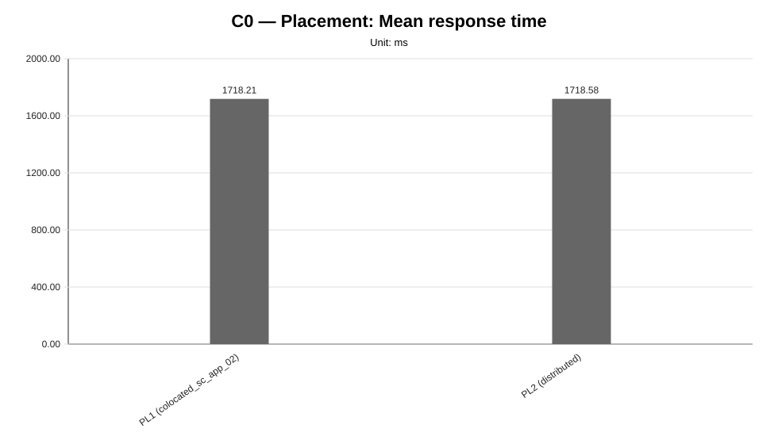
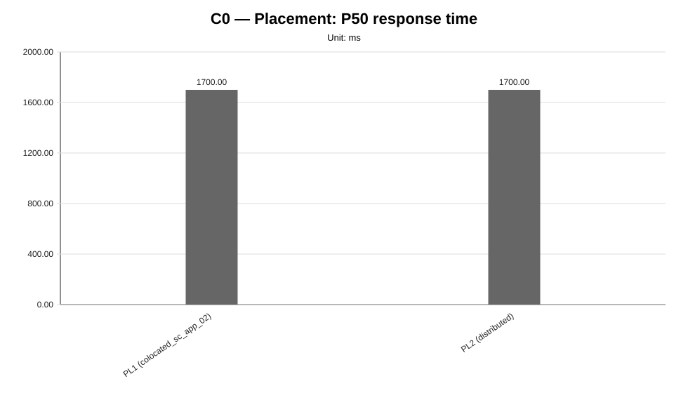
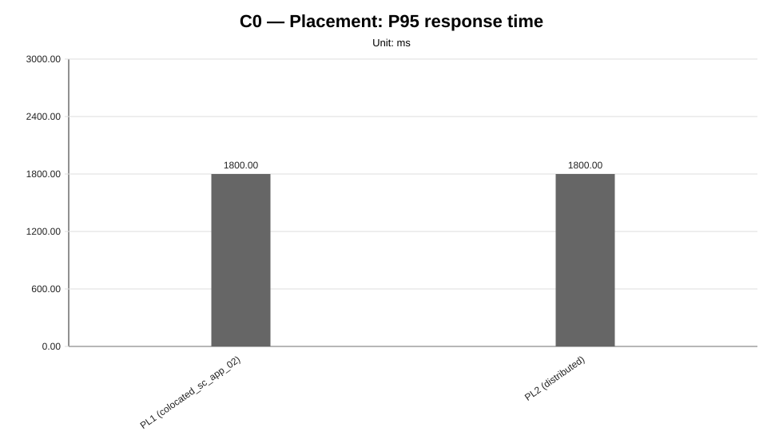
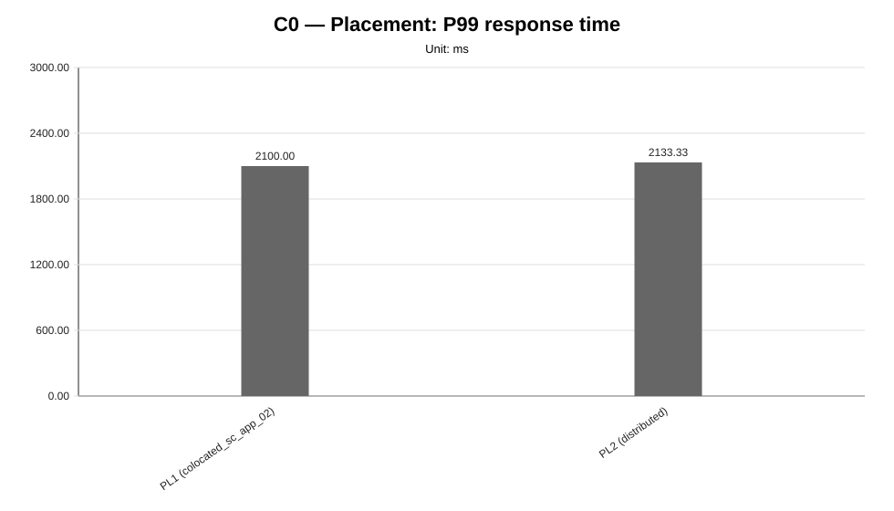
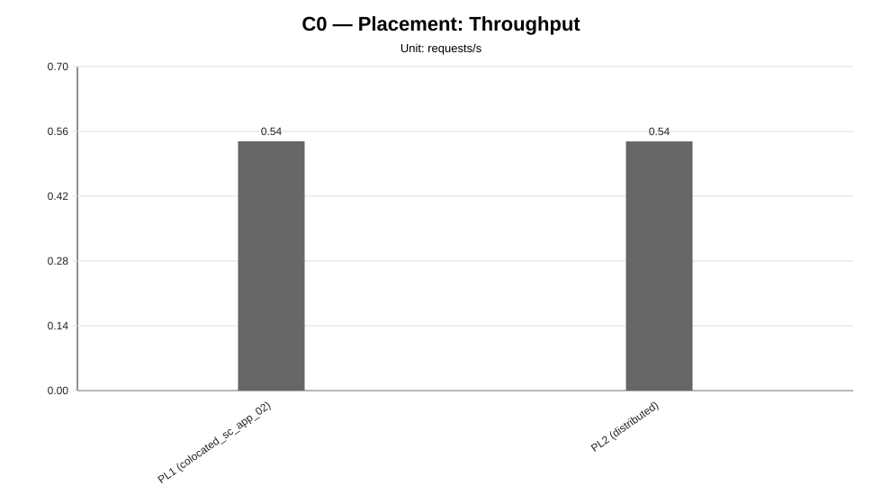
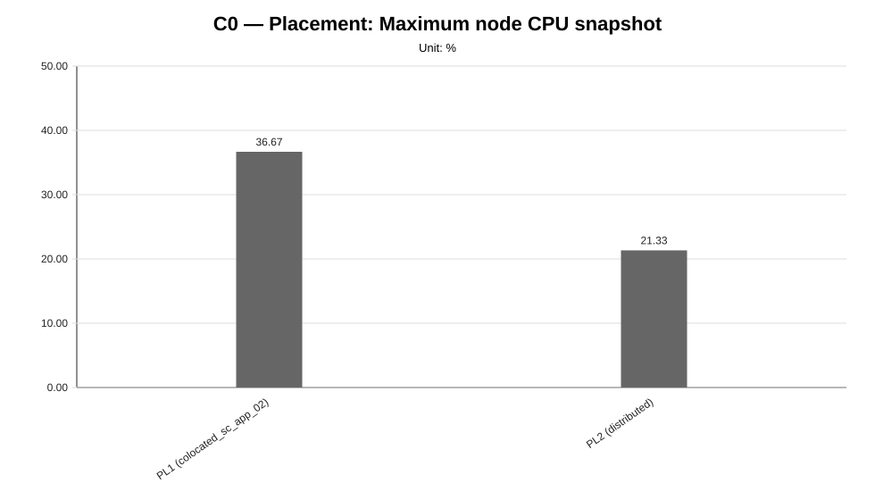
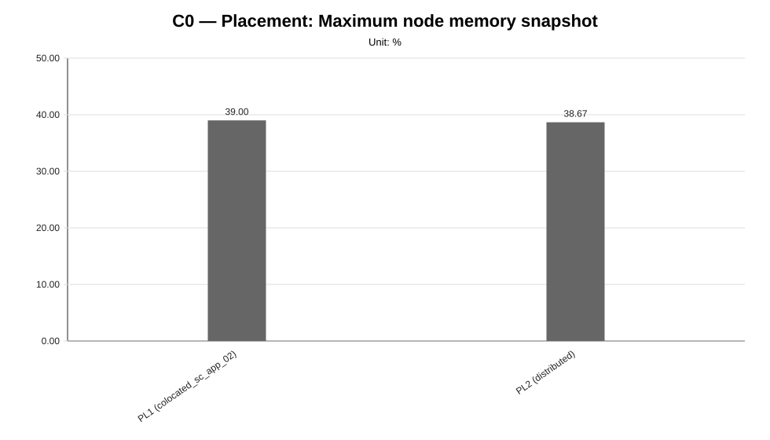
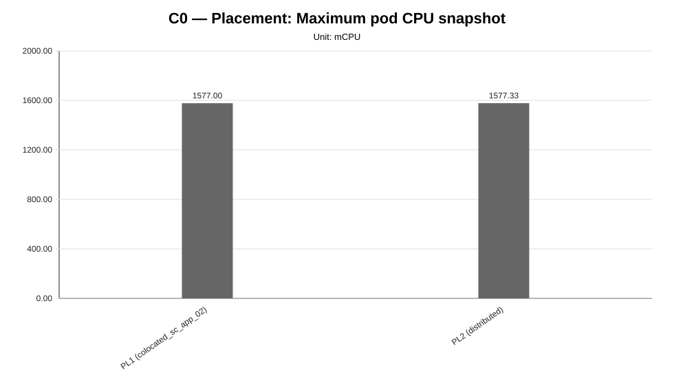
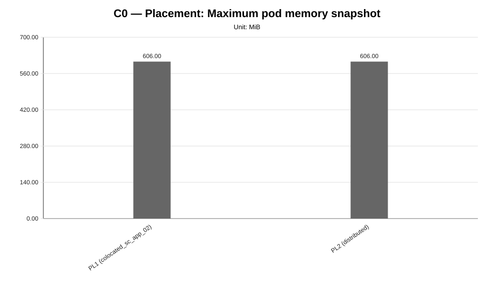
not_executed sweep means that neither measurement CSV files nor unsupported-scenario evidence were found for any configured scenario in that family.Reporting is a static post-processing artifact: rerun the reporting launcher after producing new benchmark and diagnosis outputs.
The current global report is written directly under results/experimental-cycles/C0/reporting/ and managed artifacts are overwritten on each execution.
Optional archiving can preserve either the newly generated report package or the already generated current report under results/experimental-cycles/C0/reporting/archive/<reporting-id>/ without changing the stable current report path.
Each benchmark family also receives a dedicated report under results/experimental-cycles/C0/reporting/sweeps/<family>/.
Quantitative charts are generated from measurement CSV files whenever available; technical diagnosis is used as contextual and interpretative evidence.
Unsupported scenarios are reported explicitly and are not treated as measured performance regressions.